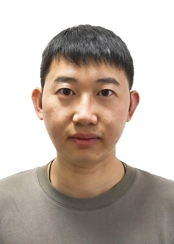

Qian Zhang(张迁)
Profile(简介)
Publications(论文)
Grants(项目)
Courses Taught(教学)
Academic Service(学术服务)
Awards(奖项)

Qian Zhang(张迁)
Associate Professor at School of Information Technology, Jiangsu Open University
副教授 · 江苏开放大学 信息工程学院
Research Interests：Noisy label Learning/Trustworthy AI, Multimodal Learning and AI4S, etc.
研究兴趣：噪声标签学习/可信AI，多模态学习和人工智能驱动的科学等。
📧 zhangqian@jsou.edu.cn
📍 Nanjing, China
Google Scholar
GitHub
ORCID
Affiliation Links
News(动态)
Expand(展开全部年份)
Research Interests(研究方向)
Research Direction 1：
Trustworthy AI
/
Noisy Label
(噪声标签学习/可信AI)
Research Direction 2：
Multimodal
(多模态学习)
Research Direction 3：
AI4S
(人工智能驱动的科学)